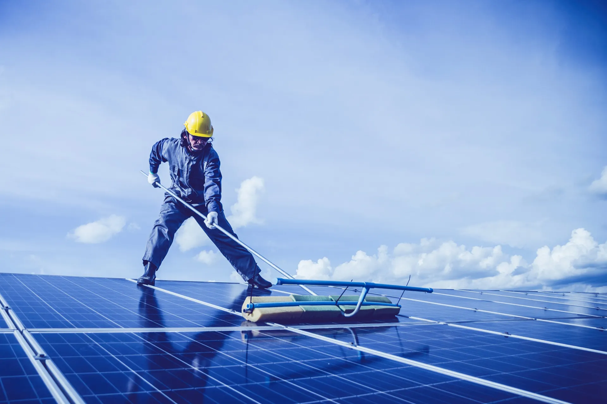
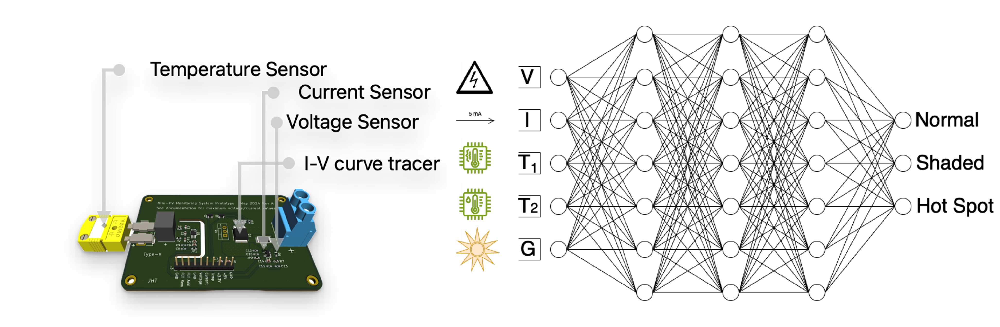
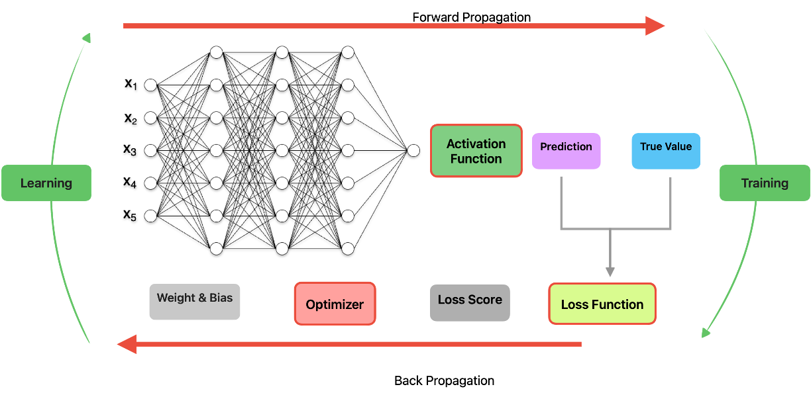
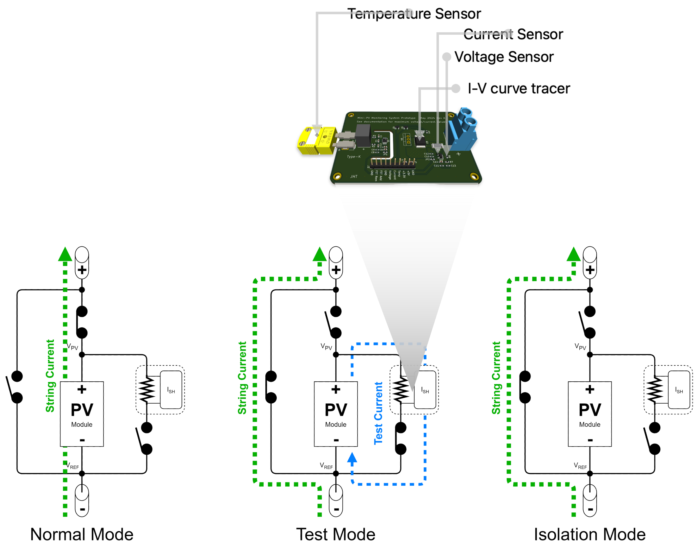
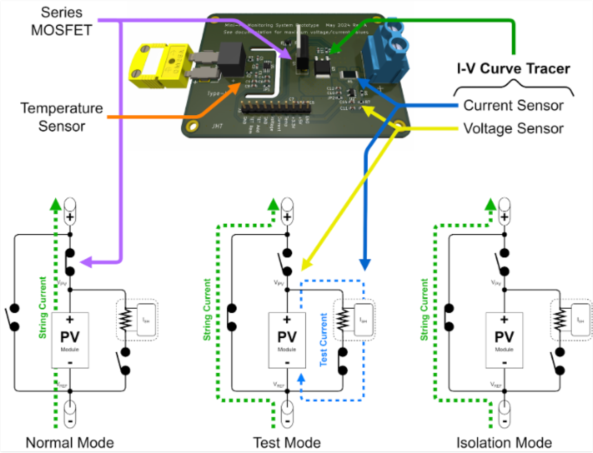
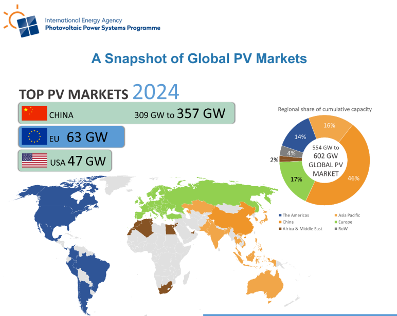
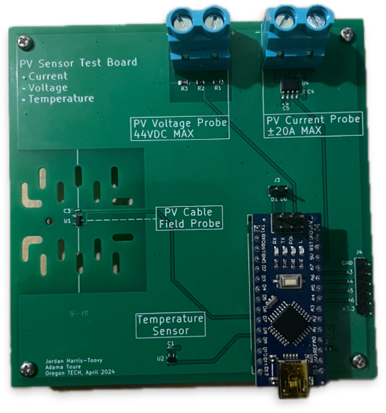

Why decentralized energy needs a new layer
As PV scales globally, systems operate at high DC voltages across millions of sites. Visibility and control must exist at the module level—not only at the inverter or string.
SEPT is building the infrastructure layer for smarter decentralized systems. Solar Sense is our first product line—panel-level measurement, machine-learning diagnostics, and integrated safety paths—so solar can scale without sacrificing visibility or control at the module.
As PV scales globally, systems operate at high DC voltages across millions of sites. Visibility and control must exist at the module level—not only at the inverter or string.

Residential and commercial arrays regularly operate at hundreds of volts DC. Without granular visibility and shutdown paths, hazards persist for installers, O&M crews, and emergency responders.

Most fleets are monitored coarsely. Finding the failing module takes longer—wasting energy, accelerating degradation, and raising maintenance cost.

Regulators and fire-safety stakeholders are pushing module-level visibility and shutdown worldwide—raising the bar for MLPE, monitoring, and emergency behavior.

Solar Sense ties physics-aware modeling with field telemetry so operators see performance and anomalies in context—not just raw streams.

Models trained on PV behavior help distinguish shading, hotspots, electrical anomalies, and early degradation—supporting predictive maintenance beyond fixed thresholds.

Detection outputs roll up into maintenance-ready indicators so teams spend less time hunting issues and more time fixing them.

Module-level intelligence complements optimizers, inverters, and rapid shutdown gear—sense, detect, and control at the panel within the broader SEPT architecture.

End-to-end view of sensing, processing, and integration paths as Solar Sense connects measurement, ML, and safety switching into deployable hardware.

Compact, cable-integrated hardware designed for panel-level deployment, manufacturability, and cost-down iterations toward volume.

Distributed solar continues to expand across regions and segments—creating sustained demand for safer, smarter module-level platforms.

Functional prototypes, internal lab capability, and pilot directions anchor the path from validation toward broader deployment.
Co-founders bridging renewable energy engineering, hardware, and embedded systems for climate-critical infrastructure.
Hardware lab leadership advancing prototypes, measurement rigs, and integration for next-generation Solar Sense devices.
Continue on our detailed Solar Sense site for pricing brackets, revenue streams, market-entry strategy, and partnership pathways—built for readers evaluating deployment and collaboration.
Learn more about Solar Sense